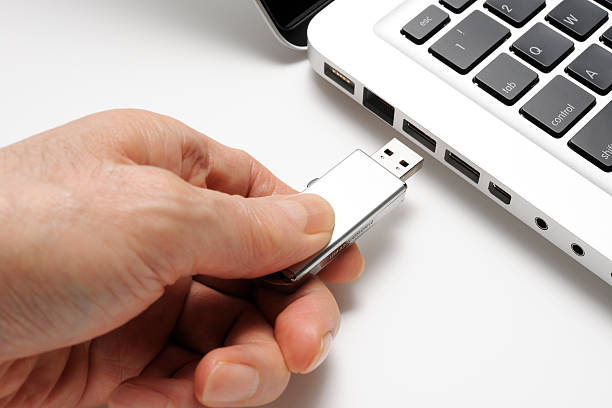

What are the Benefits?
There can be many benefits to using a portable application over a more conventional app that requires installation. The majority of benefits that you might hear most people discuss are related to how easy it can be to transfer the apps between computer systems and complete work wherever a user may have access to a computer. With the nature of portable apps not needing to be installed on the computer device, all a user has to worry about when using a computer system is if they have all of the applications they require on the storage drive that they are carrying with them. As the applications will be able to run directly from the storage device and will not need to save any temporary files to the computers storage drives or temporary file locations. This benefit itself provides a wide range of access to the areas and systems that a user can produce work on, just as long as they have the portable applications on a storage device that they carry with them.
How Easy are they to Use?
For many users, portable applications are the way to go. This is due to how easy it is to use them. Essentially, they are exactly like regular applications although they allow a user to use them on several different computers and transport all of their files around on a storage drive. However, not all applications were designed as portable apps and therefore are not normally available in that form. A good way to get around this is the use of a launcher for portable apps that has been developed with the intention of creating portable versions of regular apps that people are able to use instead of regular portable app alternatives. This launcher can be found at PortableApps.com. Thanks to this handy piece of software, you can now use a wider variety of portable applications versions that you may already use in day to day work such as Gimp, Chrome, FireFox and Notepad++ to name a few.
PortableApps.com

PortableApps.com is a website that allows you to download an application launcher that gives you access to hundreds of portable versions of popular applications. https://portableapps.com/